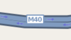

Shield Symbolizer¶
Symbolizer that specifies rendering of a png, tiff, or svg graphic symbol and label text at a point.
Effectively, this is a (working) combination of TextSymbolizer and PointSymbolizer. If you try to use a TextSymbolizer and a PointSymbolizer separated you will often see points without texts and/or texts without points.

Configuration Options¶
Supports all options of TextSymbolizer with additional options:
parameter |
value |
default |
|---|---|---|
base |
Base symbol template (See below) |
|
file |
The file to use for the shield background |
|
opacity |
opacity of the image used for the shield |
1 |
text-opacity |
opacity of the text placed on top of the shield |
1 |
unlock-image |
If true the shield image doesn't move |
"false" |
shield-dx |
offset the shield image and text horizontally |
0 |
shield-dy |
offset the shield image and text vertically |
0 |
transform |
Transform image |
base¶
Add
<FileSource name="foo">/home/bar/baz/</FileSource>
to the beginning of your stylesheet and then use
<ShieldSymbolizer base="foo" name="bridge" />
to refer to /home/bar/baz/bridge.
dx, dy¶
To draw labeled points configure placement="point" (which is the default) and set dx/dy to move the text.
dx, dy from TextSymbolizer moves only the text, and not the shield. This behavior will be changed in a future release of mapnik. (See below).
New interface in HarfBuzz branch¶
parameter |
value |
default |
|---|---|---|
shield-dx, shield-dy |
Move shield only. |
0 |
dx, dy |
With unlock_image = true: move text only. |
0 |
With unlock_image = false: move text and shield |
0 |
|
unlock_image |
True: Shield base point is always the input line/point (usecase: labeling bus stations). |
0 |
False: Shield base point is the center of the text (i.e. depends on dx,dy,vertical-alignment, horizontal-alignment) (usecase: highway shields) |
When symbols are still moving with dx/dy after setting unlock_image = true, try unlock-image="true" instead.
placement¶
placement="line" only means placement along a line for ShieldSymbolizer, whereas for TextSymbolizer it rotates the text too. Add the spacing parameter to get the ShieldSymbolizer to repeat along the line, otherwise placement="line" and placement="point" will look the same.
Examples¶
Setting up a sample shield symbolizer, from the Cascade Users of OpenSource GeoSpatial (CUGOS) list: http://groups.google.com/group/cugos/browse_thread/thread/b62b4890e1933bba
XML¶
<ShieldSymbolizer
face-name="DejaVu Sans Bold" size="6" fill="#000000"
file="images/shield.svg" spacing="100" transform="scale(2.0,2.0)"
min-distance="50">
[NAME]
</ShieldSymbolizer>
Python (Mapnik 2)¶
shield = ShieldSymbolizer(Expression('[NAME]'),'DejaVu Sans Bold',6,Color('#000000'),PathExpression('images/ushighway_shield_20.png'))
shield.min_distance = 50
shield.label_spacing = 100
shield.displacement = (dx,dy)
Python (Mapnik 3)¶
No support.
C++¶
rule_type rule;
/* Parameters:
name
face name
size
color
image
image type
width
height
*/
shield_symbolizer ss("[NAME]", "DejaVu Sans Bold", 6, color(0, 0, 0), "/path/to/icon.png", "png", 20, 20);
ss.set_label_placement(mapnik::LINE_PLACEMENT); // Place label along the line
ss.set_displacement(dx, dy);
ss.set_label_spacing(min_distance);
rule.append(ss);